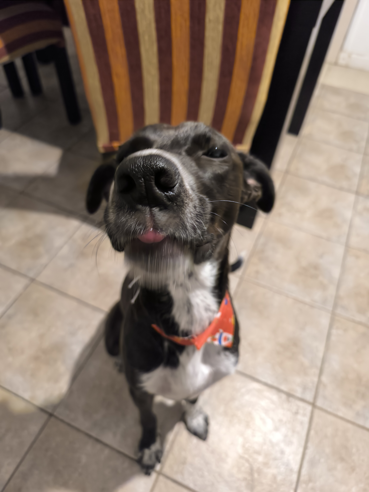

 Ignacio Toledo Roll Ubicación: Buenos Aires · Edad: 23 Habilidades / Intereses HTMLCSSJavaScriptReactNode.jsGit Trabajo en equipoResolución de problemasComunicación efectivaAdaptabilidad Música Favorita Fear — Kendrick Lamar (Canción) Corpiños en la madrugada — Sumo (Álbum) The Alchemist (Artista) Juegos Favoritos Elden Ring Inscryption Resident Evil 4